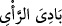

ulvî davranışlara dâvet eder.
Süflî bir varlık olan nefis ise süflî bakışı yüzünden ulvî varlıkları göremez. Süflî
tabiatından dolayı da ulvî davranışlara meyletmez. Aksine süflî davranışlara meyleder.
Süflî bakışı yüzünden her şeyi süflî görüp başkalarını da kendi âlemine çağırır.
Bu yüzden de ulvî bir varlık olan rûha kendisine benzediğini düşünerek bakar. Aynı
şekilde bu nefsin sâhibi de ulvî rûh sâhibini kendisi gibi değerlendirerek: “Seni de
bizim gibi bir insan olarak görüyoruz” der.
Bu sebeple onlar peygamberlere bakarlar, ama onları peygamber olarak görmezler.
Aksine onları yalancı, büyücü ve deli olarak görürler. Peygamberlere tâbî olanları da
küçük ve hakîr görürler. Nitekim şöyle derler:
“Ve sana bizim basit görüşlü ayak takımımızdan” oymacılar, ayakkabı tamircileri ve
önemsiz bir takım zanâatlarla uğraşanlar gibi aşağı tabakadan, önemsiz ve itibarsız
kişilerden “başkasının uymadığını görüyoruz.” Şayet doğru olsaydın elbette sana zeki
ve ileri gelen kimseler uyardı.
Âyetteki “” görüşleri ilk ortaya çıktığı sırada sana uyanlardan...” yahut “iyice
düşünmeden, inceleyip sık dokumadan hemen uyanlardan ....” demektir.
Nûh (a.s.)’a îman edenler üstün akıl sâhibi kimseler olduğu halde ileri gelenler onları,
sırf fakir oldukları için, ayak takımı ve önemsiz saymıştır. Onlara göre ileri gelenler
mal, mevki sahipleridir. Nitekim siz de gününüzdekilerin çoğunun buna inandıklarını,
birine değer verirken ve küçük görürken bunu esas aldıklarını görürsünüz.
Felek, muradın yularını câhil adama verir
Sen fazîlet ve ilim ehlindensin, bu günah sana yeter
Şu dalâlet ehlinin durumu ne kadar şayan-ı hayrettir! Onlar ne peygamberliği bir
insana yakıştırırlar ne de ona uymaya razı olurlar. Ama bir taşa ilâhlığı yakıştırır ve ona
tapınmaya razı olurlar.
et-Te’vîlâtü’n-Necmiyye’de şöyle denir: “Rûha uyanların aşağı tabakası, beden ve
bedenin zâhirî organlarıdır. Çünkü çoğunlukla beden rûhun çağrısını kabul eder ve
organlara şer’î amelleri yaptırır. Nefsi emmâre ise küfür ve inkâr üzere kalır. Bedenin
organlara şer’î ve dinî amelleri yaptırmasına izin vermez. Ancak insanların çoğunun
âdeti olduğu üzere dünyevî bir maslahat ve fâsid bir gâye için amel edilmesine izin
verir.”
“Sizin” yani senin ve sana uyanların “bize karşı bir üstünlüğünüzü” mal, mülk
konusunda sizi peygamberliğe ehil kılacak, size uyulmaya hak kazandıracak fazladan bir
şeref “de görmüyoruz.” Onların sana uyması, senin peygamber olduğunu göstermez.
Sizde size tâbi olmamızı gerektirecek bir üstünlük bulamıyoruz.
el-Kevâşî’de şöyle der: “Sizin bize karşı bir üstünlüğünüzü görmüyoruz. Çünkü siz de
bizim gibi yiyip içen insanlarsınız.”
“Bilakis” sözünüz de dâvânız da aynı olduğu için “sizin” tamamınızın “yalancılar